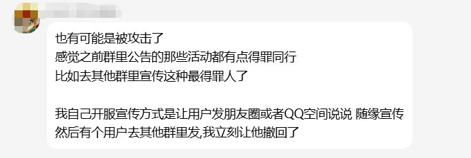
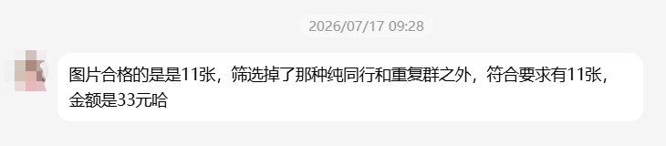
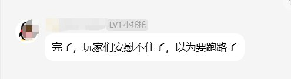

快快群里炸锅了，上周的事刚结束这周又来了，快快十多年了从来没出过这么大事，这两周一次又一次的出事，很有可能就是之前群里有人说的裁员被报复
前段时间快快网络让水军去别的同行群发他们的活动，导致快快的广告满天飞！一个群两三块，有群友透露7月拿了他们33块群发广告费
目前快快还有济南和十堰没挂，他境内厦门、泉州、宁波这两周都挂了个遍。


前段时间快快网络让水军去别的同行群发他们的活动，导致快快的广告满天飞！一个群两三块，有群友透露7月拿了他们33块群发广告费
目前快快还有济南和十堰没挂，他境内厦门、泉州、宁波这两周都挂了个遍。



上次厦门那个是赔偿两个月+100现金，这次快快网络kkidc的宁波资源也遭到存储池破坏，看群里有人说估计裁员报复别人留了后手 https://t.co/VpsEKKWR5F https://t.co/GsxkvMjdVj